A sniq is a photo with sound. This is everything it does.
01
A photo with sound.
You take the photo the way you always do, and it keeps two seconds of the real audio of that instant. The image does not move: what comes back is the sound. That is a sniq, and that is the whole product.
02
While the camera is open, the microphone keeps leaving the last seconds in the phone's memory. By the time you press the shutter, those seconds were already there. So there is no need to be quick: you press after the laugh happened, and the laugh still makes it in.
03
A photo that sounds.
Some photos keep an instant of movement. A sniq keeps something else: the real sound of that moment, including the part from before you pressed. The image holds still. What comes back is what could be heard. If you got here looking for a live photo for Android, this is it, the other way around: here what moves is the air.
04
The container is. The content is not.
What you share is an mp4, so any app treats it as a video and that is why it sounds wherever it lands. But what you look at is a still photo: there are no two seconds of moving image, there is a photo and the sound around it.
05
Out of everything the microphone had been hearing, Sniq keeps the two seconds with something in them: the laugh, the splash, the «look at this». There is nothing to trim. And if the cut does not convince you, you move it by hand by dragging over the waveform.
06
And it is not a setting you can switch off.
Sniq does not request Android's internet permission, so the system will not let it open any connection. It is an offline camera in the literal sense: in airplane mode, on the subway, out in the country. Your sniqs stay on the phone and you send them whenever you want.
07
Through the Android share menu, to whatever you use: WhatsApp, Telegram, Instagram, mail. It arrives sounding, because the sound travels inside the file and does not depend on the other person having Sniq. You can send the same sniq as many times as you like, days later.
08
It listens while the camera is open, and nothing else. That audio lives only in memory, overwrites itself, and is discarded when you leave the screen. Nothing is saved until you press the shutter, and nothing leaves your phone unless you send it. It is all in privacy.
09
Nothing.
Free, no account, no sign up and no ads. There is no analytics and no third party services either: Sniq never asks who you are and has no way of knowing. It needs Android 8 or newer.
Android 8 and up.
The mic listens, but nothing is saved until you take the photo, and nothing leaves your phone.

swipe sideways →
ESEN